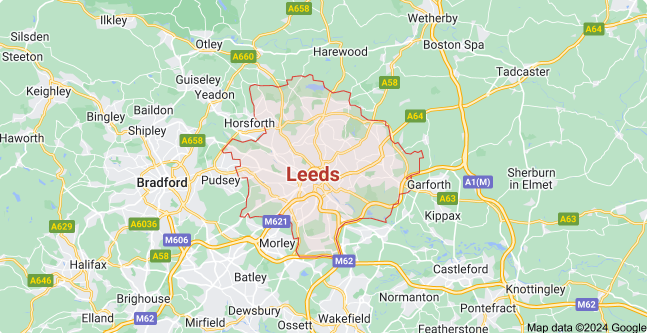
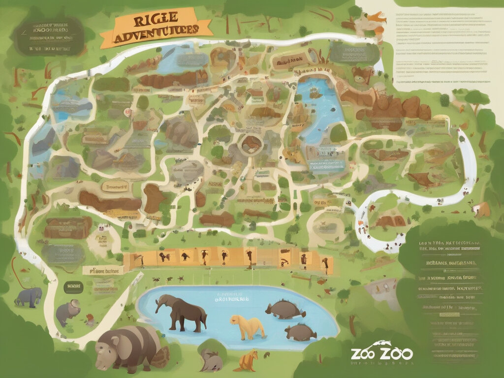
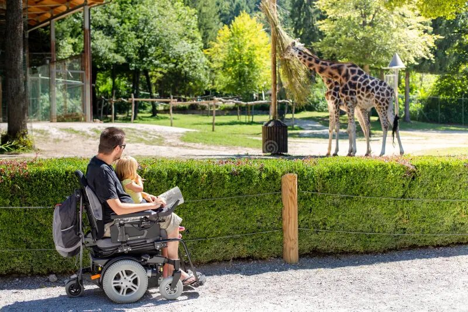

{% extends "base.html" %}
{% block title %}Plan Your Visit{% endblock %}
{% block header %}
Plan Your Visit
{% endblock %}
{% block content %}
Need Help?
Explore our FAQ for answers to your questions and plan your day at Riget Zoo Adventures
Zoo Hours:
Monday to Friday: 9:00 AM - 5:00 PM
Saturday and Sunday: 10:00 AM - 6:00 PM
Note: The zoo is closed on major holidays such as Christmas Day and New Year's Day.

Location:
Address: 123 Jungle Avenue, Leeds, LS1 2AB, United Kingdom
Conveniently located on Jungle Avenue, our zoo is easily accessible from the city center and surrounding areas.
Explore our Zoo Map:
Discover our diverse range of attractions, from the majestic lions to the playful primates, all while strolling along our beautifully landscaped pathways. Locate captivating animal exhibits, engaging learning stations, and essential facilities conveniently throughout the park.


Guest with Disabilities:
At Riget Zoo Adventures, we strive to provide an inclusive and welcoming environment for all visitors, including those with disabilities. We are committed to ensuring that everyone can enjoy a memorable experience while exploring our zoo.